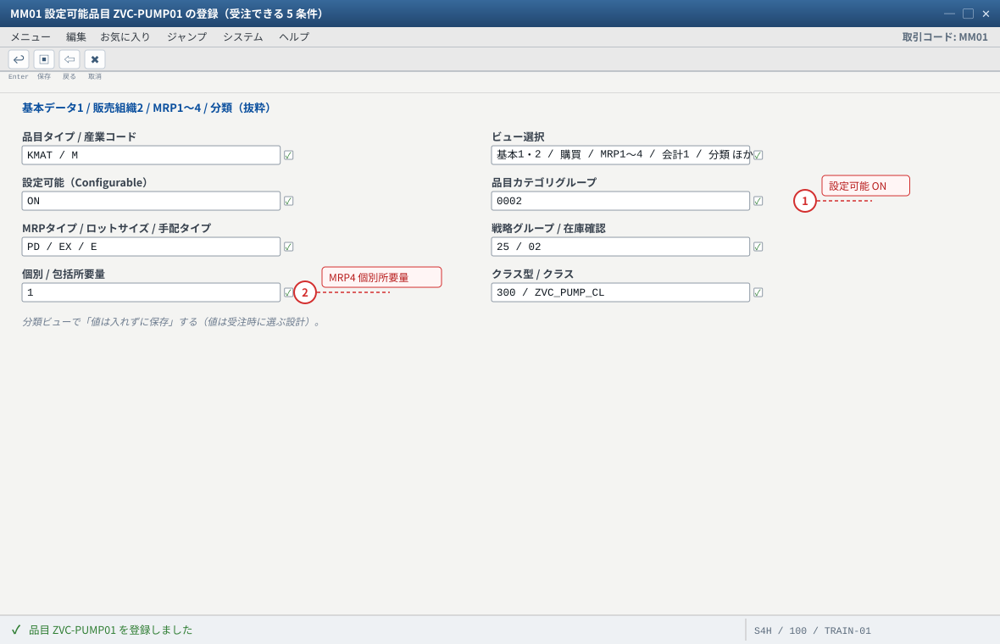
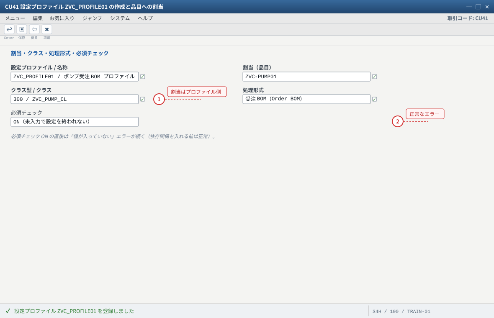
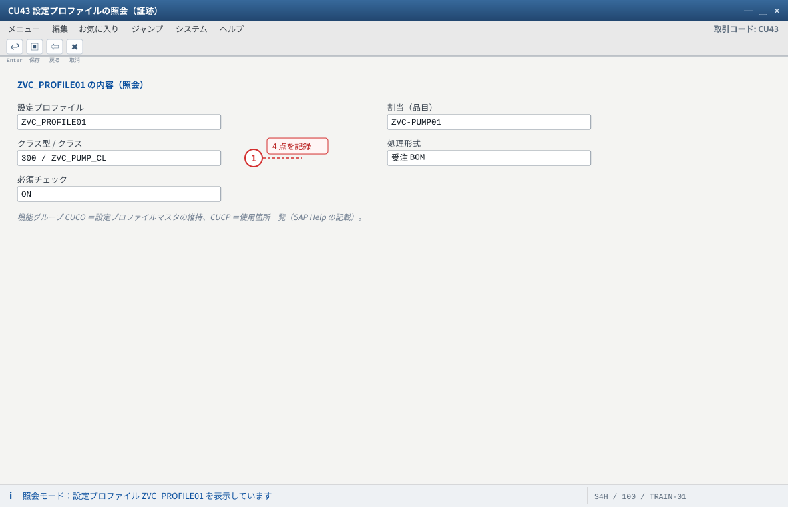
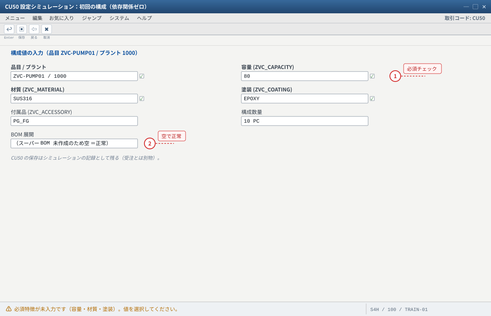

练习② 設定可能品目（KMAT）と設定プロファイル
关于本页的「画面イメージ」：这些图是按 SAP GUI 标准布局重绘的示意图，不是实机截图。字段名、字段顺序、按钮位置会因版本与自定义而不同，请以自系统的画面为准（各 STEP 的「自系统での確認方法」里写了确认用的 T-code 与表）。若是想换成实机截图，把同名
.png 放进 assets/gui/ 后执行 python3 tools/swap_gui_images.py <site> --apply 即可一键替换。本练习完成什么
「設定できる状態」まで持っていきます：①
本练习之后系统里的状态是：
MM01 で品目 ZVC-PUMP01 を品目タイプ KMAT で作成し、
「受注できる 5 条件」（KMAT／設定可能インジケータ ON／品目カテゴリグループ 0002／MRP3 戦略 25／MRP4 個別所要量）を入れ、
② 练习①で作ったクラス ZVC_PUMP_CL を分類ビューで割当、③ CU41（AVC は PMEVC）で設定プロファイル ZVC_PROFILE01 を作って品目に割当、
④ CU50 で初めて設定（構成）を 1 件作ってみる、までです。预计 45 分钟。本练习之后系统里的状态是：
CU50 で値を選べる（依存関係はまだ無いので、値は全部手で選ぶ）。1 MM01
KMAT 作成
KMAT 作成
→
2 5 条件
0002 / 25 / MRP4
0002 / 25 / MRP4
→
3 分類ビュー
クラス割当
クラス割当
→
4 CU41/PMEVC
プロファイル
プロファイル
→
5 CU50
初回の構成
初回の構成
→
✓ 验收
2-1 設定可能品目 ZVC-PUMP01 の登録（MM01）
入力值
| 视图 | 项目 | 值 | 说明（なぜ必要か） |
|---|---|---|---|
| 初期画面 | 品目タイプ | KMAT | VC の前提。F4 に出ない場合は C0 に戻って番号範囲を確認 |
| 初期画面 | 産業コード | （例）M（機械） | — |
| 初期画面 | ビュー | 基本1・2 / 購買 / MRP1〜4 / 会計1 / 原価計算1 / プラント在庫 / 販売組織1・2 / 分類 | 分類ビューを必ず含める（クラス割当に必要） |
| 基本データ1 | 品目グループ / 単位 | 001 / PC | 台数で管理 |
| 基本データ1 | 設定可能（Configurable） | ON | 最頻出の設定漏れ。OFF だと構成画面が出ない |
| 販売組織1 | 販売組織 / チャネル / 部門 | 1000 / 10 / 00 | 受注できる販売エリア |
| 販売組織2 | 品目カテゴリグループ | 0002 | VC の標準（SET 処理は 0004 という記載）。VOV4 の決定キー |
| MRP1 | MRPタイプ / ロットサイズ / 手配タイプ | PD / EX / E | 手配タイプ E（内製）。空だと計画手配ができません |
| MRP2 | 指図タイプ（伝票タイプ） | PP01 | 製造指図のタイプ（练习⑤の戦略 82 では PP04 系） |
| MRP3 | 戦略グループ / 在庫確認 | 25 / 02 | 戦略 25 → 所要量タイプ KEK → 所要量クラス 046 系（varconf）。在庫確認 02 = 個別所要量ベース |
| MRP4 | 個別/包括所要量 | 1 | 受注在庫（E）を成立させる必須項目 |
| 会計1 / 原価計算1 | 評価クラス / 価格管理 / 原価計算ロットサイズ | （例）7920 / S / EX | 在庫評価と指図差異の基準（環境の値を確認） |
| 分類 | クラス型 / クラス | 300 / ZVC_PUMP_CL | 练习①で作ったクラスを割当てる |
MM01→ 品目ZVC-PUMP01（内部採番なら空でも可）→ 産業コード → 品目タイプKMAT→ ビュー選択（上表）→ プラント1000。- 基本データ1：名称「産業用ポンプ（設定可能）」、設定可能インジケータ ON、単位
PC。 - 販売組織1・2：販売エリアと品目カテゴリグループ
0002、税区分・品目統計グループを入力。 - MRP1〜4：
PD／EX／手配タイプE／戦略25／在庫確認02／個別所要量1／指図タイプPP01。 - 会計1・原価計算1：評価クラスと価格管理（環境の標準値を確認。分からなければ講師に聞く）。
- 分類ビュー：クラス型
300→ クラスZVC_PUMP_CLを入力 → 特徴 4 つの値割当画面に切り替わる（値はまだ空でよい）。ここで値は入れずに保存（受注時に選ぶ設計）。 - 保存 →
MM03で 5 条件＋クラス割当を再確認。
確認（期待结果）
①
MM03 → 基本データ1：設定可能インジケータ ON。② 販売組織2：品目カテゴリグループ 0002。
③ MRP3：戦略 25・在庫確認 02。④ MRP4：個別所要量 1。⑤ 分類ビュー：ZVC_PUMP_CL（型 300）。
この 5 点が VC の「受注できる条件」——後の故障切り分けでは必ずここに戻ります。つまずき
① 品目タイプを
FERT にしてしまう（KMAT を選び忘れ）→ 構成画面が出ない。varconf は「KMAT、または設定可能インジケータ付きの FERT」という記載もあるため動けば正しいが、学習では KMAT を使う。
② 設定可能インジケータ ON を忘れる（同じく構成画面が出ない）。「構成が出ない」＝ まずこの 2 点。
③ 分類ビューを選ばずに保存した場合、後から MM02 で分類ビューを追加できる（品目タイプを変えるのと違ってこれは簡単）。
④ MRP4 に 1 を入れずに保存 → 受注時に「受注在庫に割当できません」系のエラー（练习⑤ 故障表 #3）。
⑤ KMAT は在庫管理されないため、MMBE に自由在庫が出ない＝故障ではありません（仕様）。
- 1 設定可能 ON を忘れると構成画面が出ない（「構成が出ない」＝まずこの項目）
- 2 MRP4 の個別所要量が無いと受注時に「受注在庫に割当できません」系のエラーになる
自システムでの確認：MM03 の基本データ1（設定可能 ON）／販売組織2（0002）／MRP3（25・02）／MRP4（1）／分類ビュー（ZVC_PUMP_CL）。
2-2 設定プロファイル ZVC_PROFILE01 の作成と割当（CU41 / PMEVC）
入力值
設定プロファイル名 ZVC_PROFILE01 名称 ポンプ受注 BOM プロファイル 割当先品目 ZVC-PUMP01 クラス 300 / ZVC_PUMP_CL 処理形式 ★受注 BOM（Order BOM） ← 3 形式のうちどれかを選ぶ（設計判断） 必須チェック ON（未入力で設定を終われない） AVC の場合 PMEVC で作成し、特徴グループを割当（Fiori の設定画面に反映）
CU41→ プロファイル名ZVC_PROFILE01→ 「登録」。- 「割当」欄に品目
ZVC-PUMP01を入力（品目マスタ側ではなくプロファイル側で指定するのがポイント）。 - クラス
300/ZVC_PUMP_CLを入力 → 特徴が読み込まれることを確認。 - 処理形式を設定：
"BOM"を含む項目を F4 で一覧し、「受注 BOM」を選ぶ（ラベルはリリースで異なる）。 - 必須チェック／完全性チェックを ON。保存（依頼を指定）。
- AVC 環境の場合は
PMEVCで同様に作成し、特徴グループ（特徴を画面に並べる単位）を割り当てる。CU50 相当の画面は Fiori 系アプリになる。 CU43でプロファイルZVC_PROFILE01を照会し、割当品目・クラス・処理形式・チェックの状態を確認。
確認（期待结果）
①
CU43：割当品目＝ZVC-PUMP01、クラス＝ZVC_PUMP_CL（型 300）、処理形式が意図どおり、必須チェック ON。
② 設定プロファイルのマスタは画面経由で保守するのが原則（SAP Help に「機能グループ CUCO＝設定プロファイルマスタの維持、CUCP＝使用箇所一覧」という記載）。
③ 「この品目にどのプロファイルが付いているか」を確認するときは CU43 の一覧と品目側の設定を両方見る（割当はプロファイル側なので品目マスタからは見えないことがある）。つまずき
① 品目に割り当て忘れる→
CU50 は開くのに VA01 で構成画面が出ない（受注は品目マスタ経由でプロファイルを探すため）。
② 処理形式の選択を後から変える→ 受注 BOM を作った後の変更は既存受注を壊す。受注を流す前に固める。
③ CU41（LO-VC）と PMEVC（AVC）で二重にプロファイルを割り当てる→ どちらが効くか分からなくなる。環境を 1 つに統一。
④ 必須チェック ON 直後は「値が入っていない」エラーが出続ける → 正常です（依存関係を入れる前は全部手入力する必要がある。练习③で自動化する）。練習課題
CU41 と（AVC 環境なら）PMEVC の両方で「設定プロファイルが持つ情報」を一覧にし、どちらで作ると後工程（変更・移行）が楽かを理由つきで書け。
- 1 品目への割当はプロファイル側で指定する（品目マスタからは見えないことがある）
- 2 必須チェック ON で「値が足りない」エラーが出るのは正常（练习③で自動化する）
自システムでの確認：CU43 の照会（割当品目・クラス・処理形式・必須チェック）。AVC 環境は PMEVC で作成し特徴グループを割り当てる。

- 1 証跡は「割当品目・クラス・処理形式・必須チェック」の 4 点を写す
自システムでの確認：CU43 の一覧と品目側の設定を両方見る（割当はプロファイル側なので品目マスタからは見えないことがある）。
2-3 初めての設定（CU50 シミュレーション）
入力值：品目 ZVC-PUMP01 / 構成 80・SUS316・EPOXY・PG_FG / 数量 10。
CU50→ 品目ZVC-PUMP01を入力（プラント1000）。- 設定画面（特徴 4 つ）が表示されることを確認。値はまだ全部手で選ぶ（依存関係ゼロの状態を先に体感する）。
- 容量
80/ 材質SUS316/ 塗装EPOXY/ 付属品PG_FGを選択。 - 「結果（構成）」を確認。BOM 展開はまだ空（スーパー BOM 未作成）＝正常。
- 設定を保存（
CU50の保存はシミュレーションの記録として残る。受注とは別物）。
確認（期待结果）
①
CU50 の設定画面に 4 特徴が出て、値を選べる。② 必須にした 3 特徴を空のまま確定しようとするとエラーになる（必須チェックが効いている）。
③ 値の選択はできるが、BOM も工程も何も出てこない——これが「何も設定していない状態の正しい姿」です（练习③で動きを作る）。つまずき
① 品目を入れて「設定プロファイルが見つかりません」→ プロファイル未割当（2-2 に戻る）。
② 特徴が 4 つではなく 1 つしか出ない → クラスの特徴割当が不完全（
CL03 で確認）。
③ CU50 の画面がクラシック画面ではなく Fiori 系（AVC）→ 操作は似ているので、画面ラベルを読み替える。
- 1 必須チェックが効いている（未入力のまま確定できない）＝正常動作
- 2 BOM も工程も何も出ないのが「何も設定していない状態の正しい姿」
自システムでの確認：CU50 で 4 特徴が出て値が選べるか、必須 3 特徴を空のまま確定するとエラーになるか。
2-4 本练习的期待结果汇总
| # | 成果物 | 期待值 | 証跡 |
|---|---|---|---|
| 1 | 設定可能品目 | ZVC-PUMP01（KMAT／設定可能 ON／0002／戦略 25／在庫確認 02／MRP4 1／PD/EX/手配 E） | MM03 の各ビュー |
| 2 | クラス割当 | 分類ビューに ZVC_PUMP_CL（型 300） | MM03 分類ビュー |
| 3 | 設定プロファイル | ZVC_PROFILE01＝割当品目 ZVC-PUMP01／処理形式＝受注 BOM／必須チェック ON | CU43 |
| 4 | 初回の構成 | CU50 で値を選べる（BOM は空で正常） | CU50 |
2-5 つまずきと対処（まとめ）
| 症状 | 原因の第一嫌疑 | 确认手顺 |
|---|---|---|
| 受注で構成画面が出ない | 設定可能インジケータ OFF／品目タイプが KMAT でない／プロファイル未割当 | MM03 基本データ1 → CU43 の割当 → VOV4（练习④）の順 |
CU50 で品目が選べない／エラー | 設定プロファイルが無い／品目が設定可能でない | CU43 → MM03 |
| 特徴が一部しか出ない | クラスの特徴割当漏れ | CL03 の特徴タブ |
| 必須エラーで先へ進めない | 必須チェック ON＋値未入力 | 正常動作。値を全部選ぶ（依存関係は练习③） |
MMBE に在庫が出ない | KMAT は在庫管理されない（仕様） | 故障ではない。在庫設計（受注在庫 E／材料バリアント）を検討 |
2-6 验收（完成基准）
- 品目
ZVC-PUMP01が品目タイプKMATで作成されている - 設定可能（Configurable）インジケータが ON になっている
- 販売組織2 の品目カテゴリグループが
0002になっている - MRP1 が
PD/EX/手配タイプE、MRP3 が戦略25・在庫確認02、MRP4 が個別所要量1になっている - 分類ビューにクラス
ZVC_PUMP_CL（型300）が割当たっている - 設定プロファイル
ZVC_PROFILE01が品目ZVC-PUMP01に割当たり、処理形式と必須チェックの状態を説明できる CU50で 4 特徴が表示され、値を選び、必須エラーの挙動を確認した- 「受注できる 5 条件」を自分の言葉で言える（
KMAT／設定可能 ON／0002／戦略25／MRP4 個別所要量）
下一步 → 练习③ 依存関係とスーパー BOM（ここから VC の「動き」が生まれます）